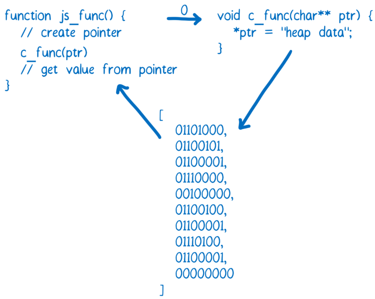
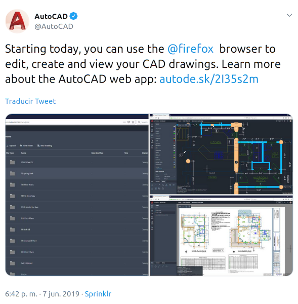

¡Hola! Soy Miguel
- Desarrollador web independiente y profesor universitario.
-
Voluntario en comunidades de código abierto:

-
Mozillero de
 viviendo en
viviendo en

¡Empecemos!
Java Applets

Aplicación matemática

NASA World Wind
¿Por qué desaparecieron los Java Applets?
- Requeria instalar Java en tu equipo.
- Nula integración con la web.
- Perdió fuerza debido a Flash, Silverlight, HTML5
- Problemas en dispositivos móviles
- ¿Problemas de seguridad?
....los applets de Java fueron desplazados...
....ante JavaScript
Rendimiento
Cómo los navegadores ejecutan JS

Fuente: Lin Clark © 2017.
Veamos un ejemplo...
Una suma en JS
function suma(a, b) {
return a + b;
}
Sencillo, ¿no?
Debería "ser una única" instrucción del CPU
Cómo ECMA-262
define una adición
- Let lref be the result of evaluating AdditiveExpression.
- Let lval be GetValue(lref).
- Let rref be the result of evaluating MultiplicativeExpression.
- Let rval be GetValue(rref).
- Let lprim be ToPrimitive(lval).
- Let rprim be ToPrimitive(rval).
- If Type(lprim) is String or Type(rprim) is String, then
- Return the String that is the result of concatenating ToString(lprim) followed by ToString(rprim)
- Return the result of applying the addition operation to ToNumber(lprim) and ToNumber(rprim).
¿Por qué?
Hay que hacer sacrificios

Entienden lenguajes de programación

Entienden binario o código de bajo nivel
¿Cómo resolver esto?
WebAssembly

- Formato binario
- NO remplaza JS
- Interface desde/hacia tu lenguaje (Java)
- Integración con WebAPI
- float32,int64, threads, SIMD
- Fácil de compilar, verificar y extensible
- Bloques de memoria de 1 byte
Cómo los navegadores ejecutan WASM

Fuente: Lin Clark © 2017.
Formatos de WASM
Formato Binario

Puedes verlo con WASM Code Explorer
WebAssembly Text Format
(module
(type $type0 (func (param i32)))
(type $type1 (func))
(import "sys" "print" (func $import0 (param i32)))
(memory (;0;) 200 200)
(export "memory" (memory 0))
(export "main" (func $func1))
(func $func1
i32.const 0
call $import0
)
(data (i32.const 0)
"Hello, world\00"
)
)Hola Mundo en WAT
Tal vez pienses que es una moda pasajera....

¡Pero no!
¡Tiene gran soporte!

¿Cómo se crea?
WebAssembly en Java
Existen 3 proyectos:
- JWebAssembly
- TeaVM
- Bytecoder
WebAssembly en Java
Compilación
-
JWebAssembly y TeaVM
Generados con MAVEN -
Bytecoder:
java -jar bytecoder-cli-2019-06-13-executable.jar -classpath=. -mainclass=TU_PAQUETE.ArchivoPrincipal -builddirectory=. -backend=js -minify=false
¿Kotlin?
Kotlin a WASM con Emscripten
Emscripten es conjunto de herramientas para llevar lenguajes de alto nivel a WASM
Kotlinsup →
LLVM →
Emscripten + Binaryen →
WASM
* Todo este proceso se hace automáticamente con un script de Graddle.
¿Qué obtengo con esto?
Resultados de la compilación
Vas a obtener 3 archivos:
- El archivo .wasm.
- El código de JS para importar el módulo.
- Una página HTML para ejecutar el módulo.
Interacción del código
Comunica código entre JS y WASM
Interacción Java -> JS
JWebAssembly
Java
import de.inetsoftware.jwebassembly.api.annotation.Export;
@Export
public static int sumaEnJava( int a, int b ) {
return a + b;
}JavaScript
let funcionJs;
WebAssembly.instantiateStreaming(fetch('simple.wasm'))
.then(obj => funcionJs = obj.instance.exports.sumaEnJava());Interacción Java → JS
Bytecoder
Java
public class MiClase {
@Export("funcionDeJava")
public static void funcionDeJava() {
}
}JavaScript
bytecoder.exports.funcionDeJava();Interacción JS → Java
JWebAssembly
Re-implementación:
import de.inetsoftware.jwebassembly.api.annotation.Import;
@Import( module = "global.Math", name = "max" )
static int max( int a, int b) {
return Math.max( a, b );
}Usando native:
import de.inetsoftware.jwebassembly.api.annotation.Import;
@Import( module = "global.Math", name = "max" )
public static native double max( int a, int b);
Interacción JS → Java
Bytecoder
import de.mirkosertic.bytecoder.api.Import;
public class CanvasRenderingContext2D {
@Import(module = "math", name = "max")
public static native long max(long aValue1, long aValue2);
}
¿Qué puedo hacer con WASM?
Editor de vídeo con WASM

Aplica los efectos en tiempo real
Aprende C (Learn C)

Un sitio para aprender C que se ejecuta en el navegador.
AutoCAD en la web
Fuente: Twitter.
Intérprete de
WordPress Gutenberg

El nuevo editor de WordPress utiliza un intérprete escrito en Rust.
Tea-VM Demo: Java en el navegador

Pruébalo en: http://teavm.org/sandbox/index.html
¡Podemos hacer
full-stack con Java!
¡Adiós JS! (En parte)
¿Faltan mas
ejemplos de Java?
¡Te invitamos a crearlos!
Futuras características de WASM
- Multi-threading y Atómicas
- Manejo de excepciones
- Recolector de basura
- Variables globales mutables
- SIMD.
- JS BigInt y WebAssembly i64.
Limitaciones en Java
- No existe un recolector de basura (GC).
- Soporte limitado de hilos.
- No hay un soporte oficial, solo proyectos de terceros.
Gracias por su atención
migueluseche.commigueluseche@mozilla-hispano.org